Read QC Report
adamc
15 May, 2019
Report generated based on data located in /Volumes/Documents2/trna_testing_2/Report
Samples: test, test_2, test_3, test_4, test_5, test_6
Report generated at: 08:51:28 15/05/2019
General stats
MultiQC general stats from Bowtie, featureCounts, FastQC and Samtools.
FC: featureCountsSamtools
SAM (Sequence Alignment/Map) format is a generic format for storing large nucleotide sequence alignments.
SAM Tools provide various utilities for manipulating alignments in the SAM format, including sorting, merging, indexing and generating alignments in a per-position format (hosted on github: https://github.com/samtools/samtools)
Reads mapped stats
Number of reads
Mapped vs unmapped reads 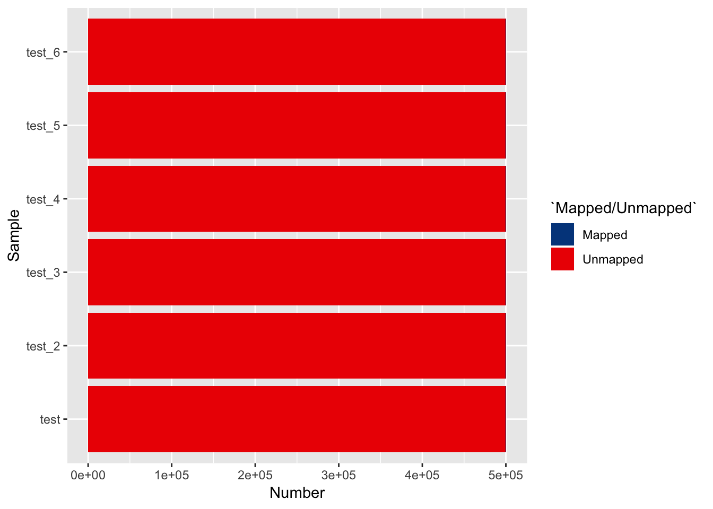
Percentages
Mapped vs unmapped reads
Alignment Metrics
Alignment metrics from samtools stats
Mapped reads per contig
The samtools idxstats tool counts the number of mapped reads per chromosome / contig. Chromosomes with < 0.1% of the total aligned reads are omitted from this plot
Normalised counts
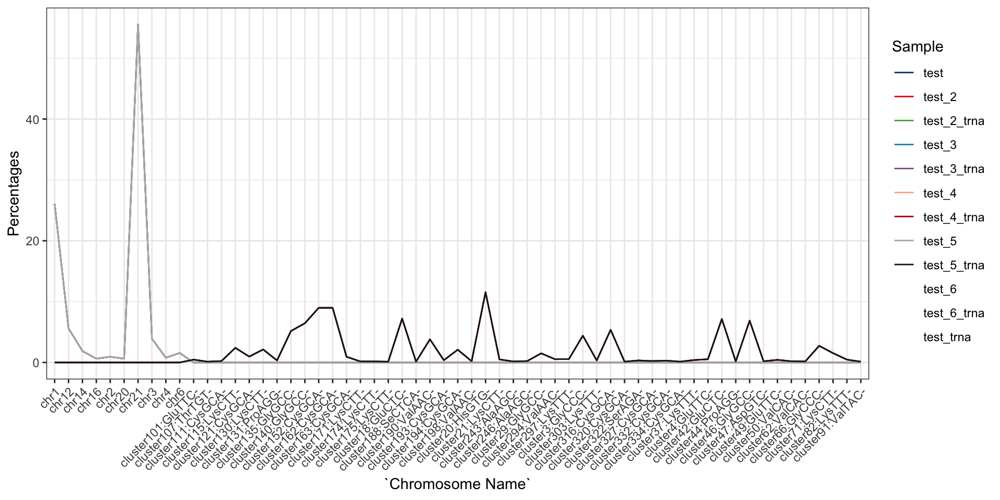
Counts
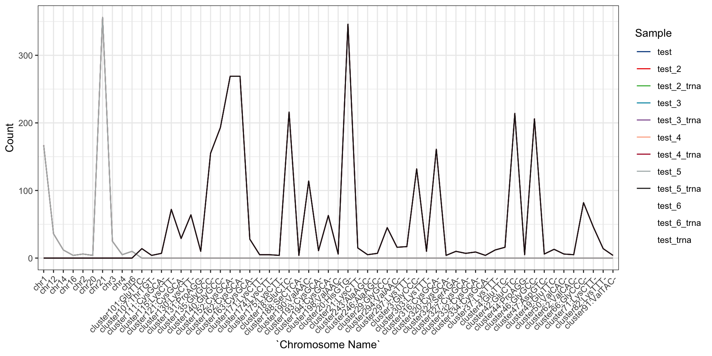
Bowtie
Number of Reads
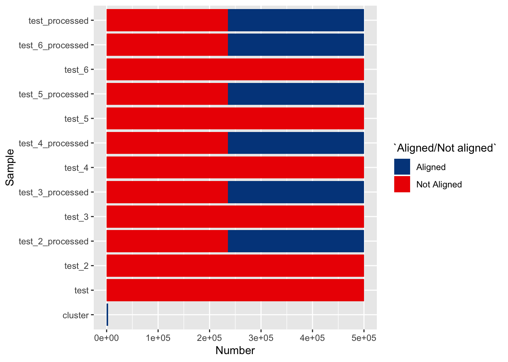
Percentages

Feature Counts
Subread featureCounts is a highly efficient general-purpose read summarization program that counts mapped reads for genomic features. Feature counts obtains data from bam files located in mapping.dir.
Gene IDs
Number

Percent
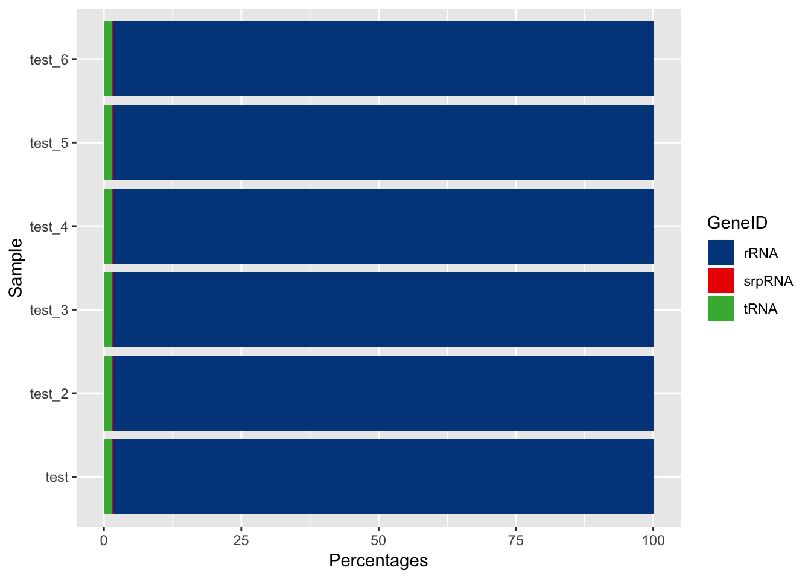
Feature Count Table
Assigned/ Unassigned
Number of reads
Percentages
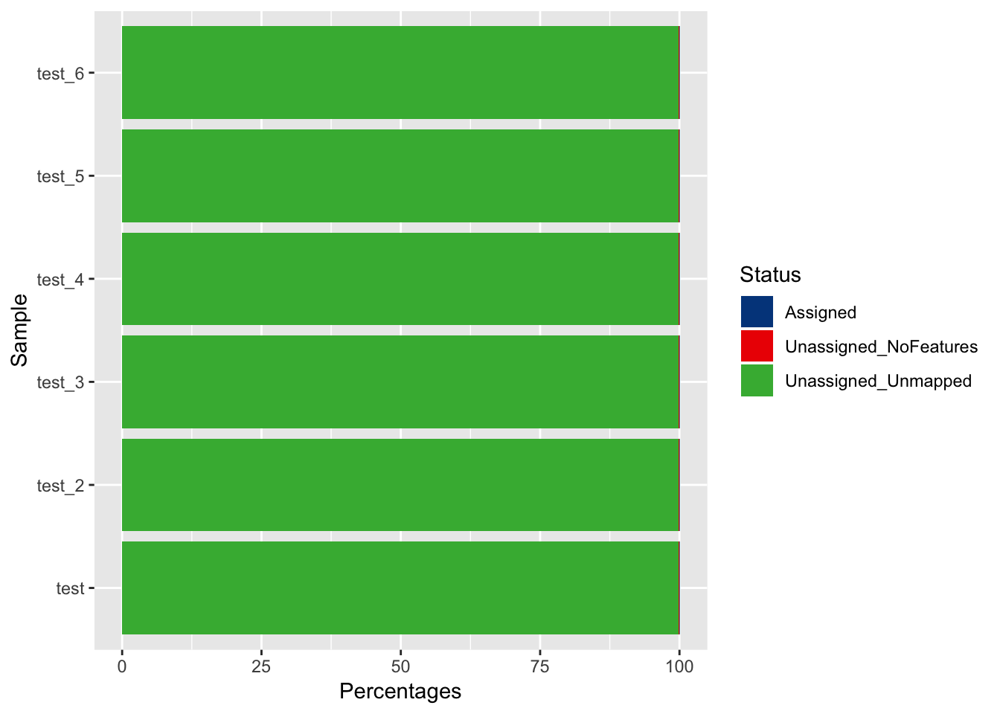
Fast QC
FastQC is used to perfrom quality control checks on raw high throughput sequencing data.
Mean quality scores
The mean quality value across each base position in the read. 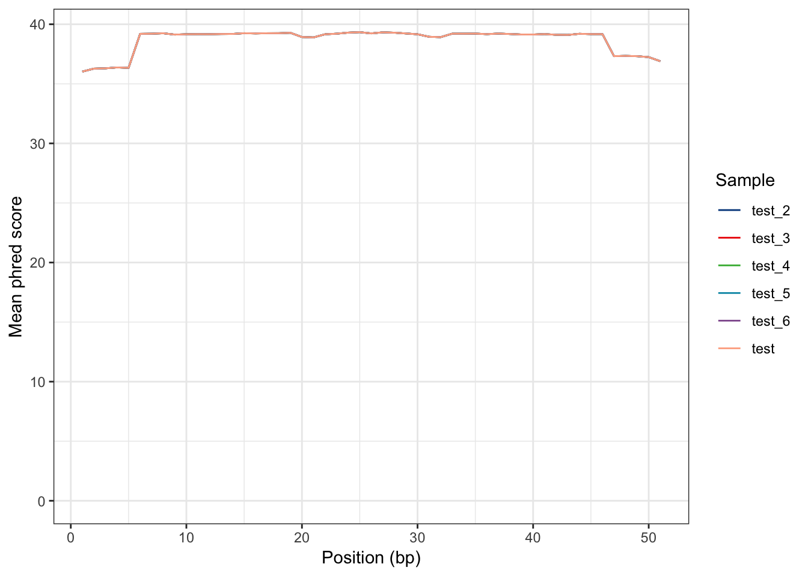
Per sequence quality scores
The number of reads with average quality scores. Shows if a subset of reads has poor quality 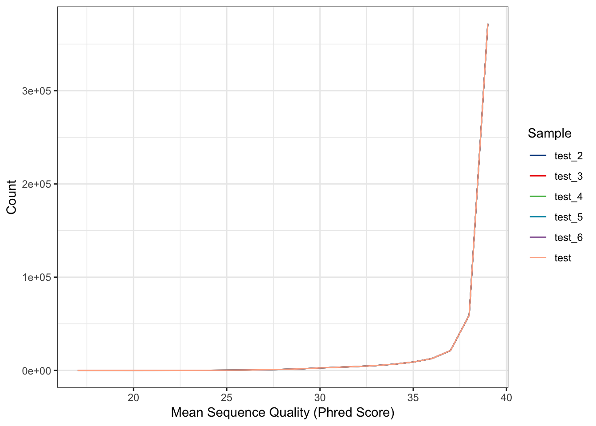
Per sequence GC content
The average GC content of reads. Normal random library typically have a roughly normal distribution of GC content. 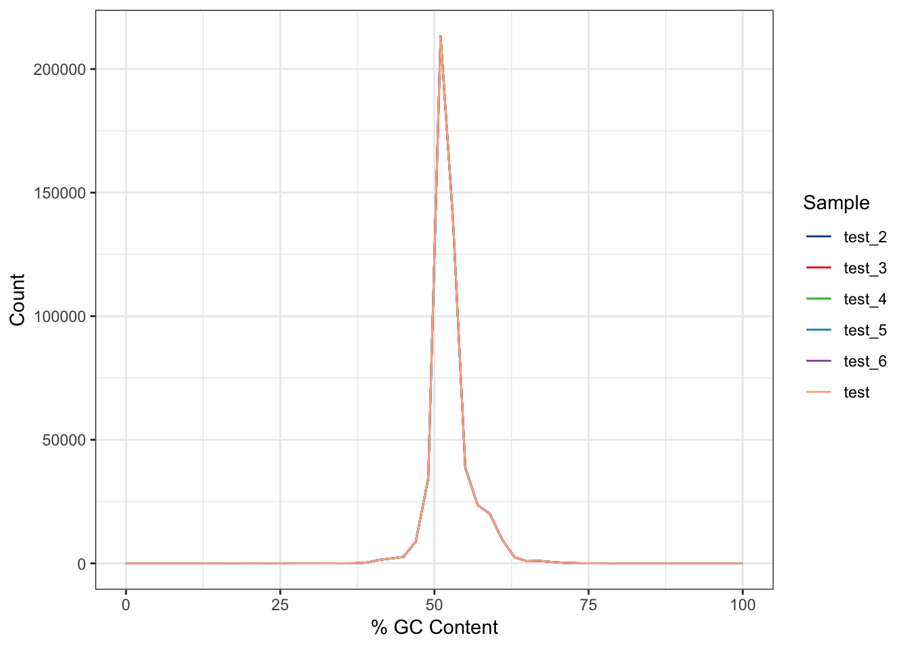
Per base N content
If a sequencer is unable to make a base call with sufficient confidence then it will normally substitute an N rather than a conventional base. This plot shows the percentage of base calls at each position for which an N was called. The documentation states that you get a warning if the number of Ns is above 5%. 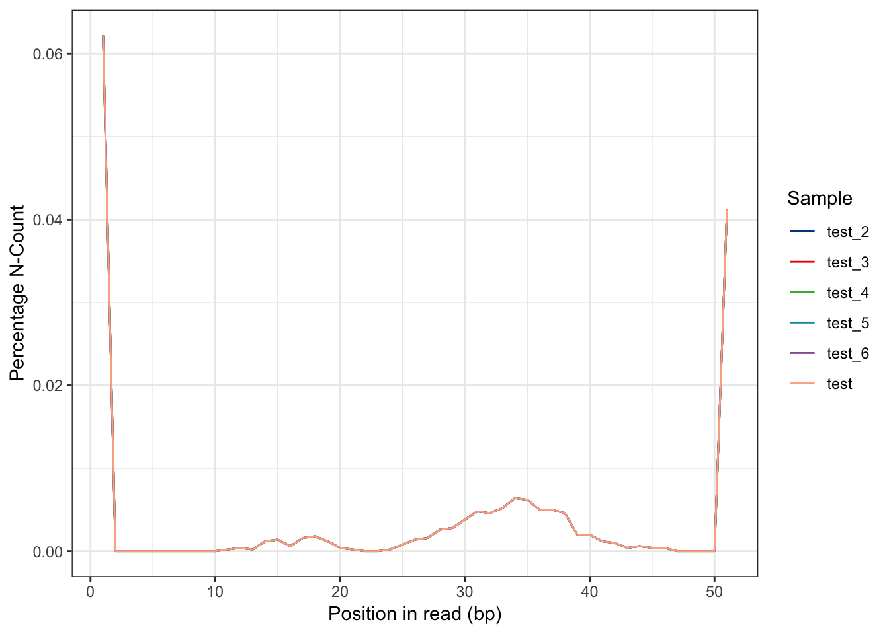
Sequence Duplicaton Levels
The relative level of duplication found for every sequence. 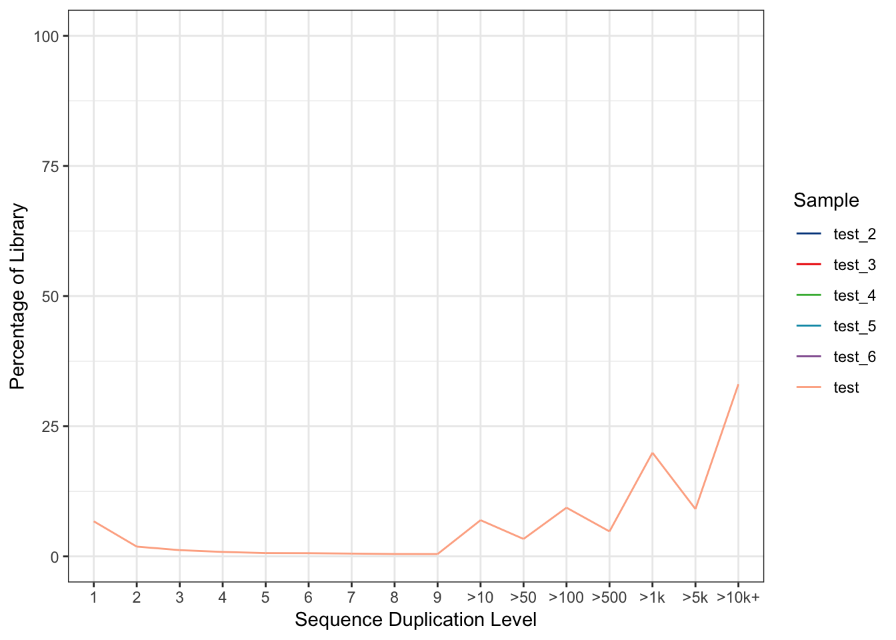
Overrepresented Sequences
The total amount of overrepresented sequences found in each library 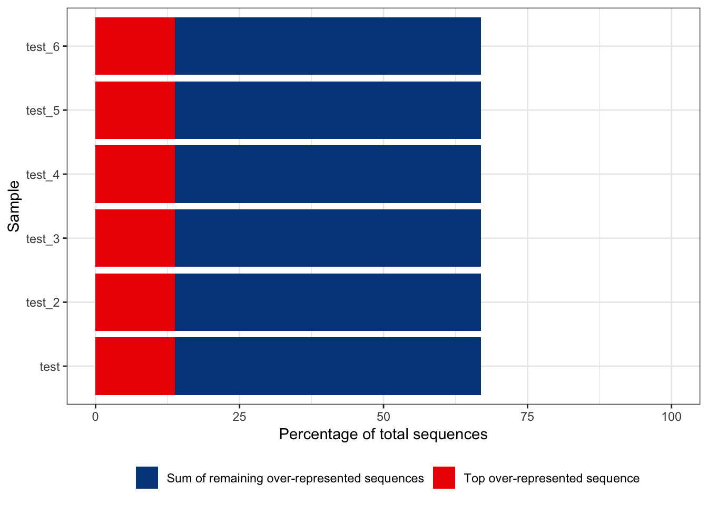
Adapter content
Specific adapter content
The percentage count of the proportion of your library which has seen individual types of adaptor sequences at each position. 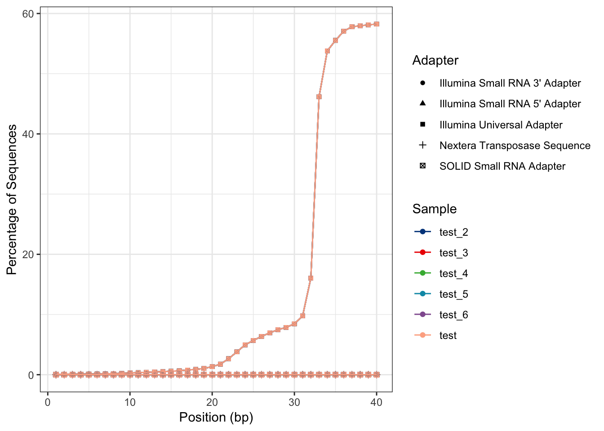
Adapter content cumulative
The cumulative percentage count of the proportion of your library which has seen each of the adapter sequences at each position. 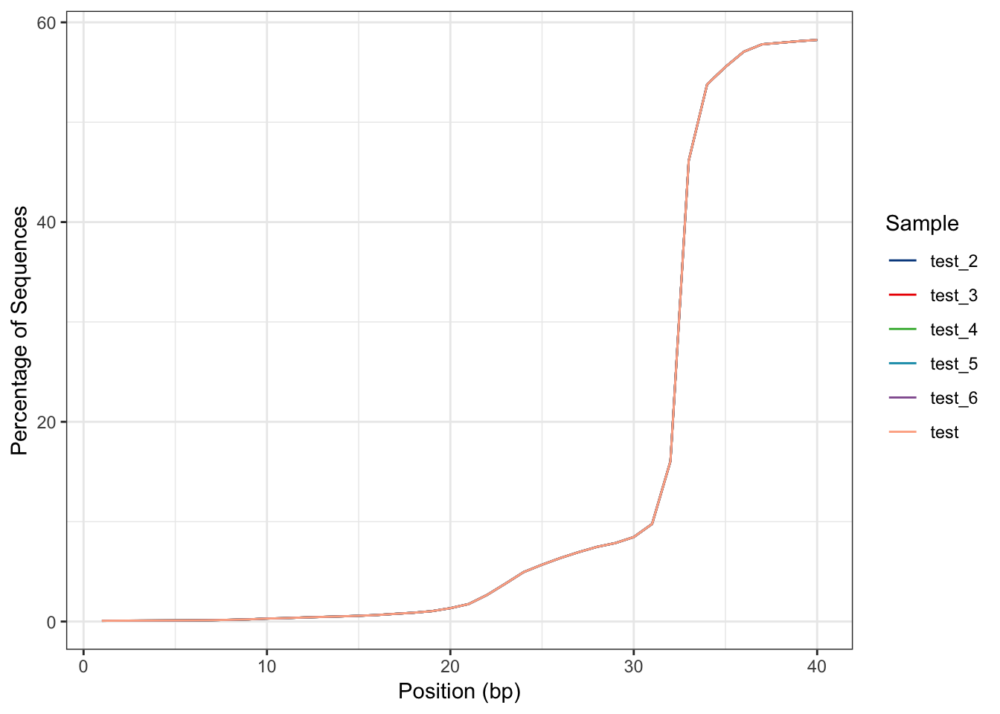